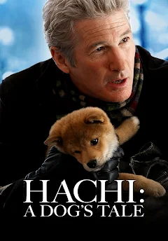

Hachikō's story is one of the most well-known tales of loyalty in the world, and his influence extends far beyond Japan. Here's a deeper dive into his life and legacy: Early Life Hachikō was born in 1923 in the city of Takasaki, in the Gunma Prefecture of Japan. He was an Akita breed dog, which is known for its loyalty and protective instincts. Hachikō was brought to Tokyo by Professor Hidesaburō Ueno, who was a faculty member at the University of Tokyo. Ueno adopted him as a puppy in 1924. The Daily Routine Every day, Ueno would take the train from his home in the Shibuya area to the University of Tokyo, and Hachikō would accompany him to the Shibuya Station. Hachikō would wait for Ueno at the station every day to greet him after work and accompany him back home. This daily ritual lasted for several years. Tragic Turn of Events In 1925, Ueno tragically passed away from a cerebral hemorrhage while at work. Despite this, Hachikō continued his routine of waiting for Ueno at the Shibuya Station every day at the same time, hoping for his return. Over the months, commuters at Shibuya Station began to notice the dog waiting faithfully at the station. His story of unwavering loyalty began to spread, and he became a symbol of faithfulness to many people. Hachikō's Legacy Hachikō's story became well-known in Japan and gained widespread attention. He continued to wait for Ueno until his own death in 1935. During the years of waiting, Hachikō had become a beloved figure among the people of Tokyo. In 1934, a year before his death, a bronze statue of Hachikō was erected at Shibuya Station, commemorating his loyalty. The statue was created by artist Ando Teru, and it has become an iconic meeting point for people in Shibuya. Unfortunately, the original statue was melted down during World War II for metal to be used in the war effort. However, in 1948, a new statue was erected at the same location, where it remains today. The statue continues to be a place of tribute, and every year, many visitors, including dog lovers and tourists, gather at Shibuya Station to honor Hachikō's memory. The Symbol of Loyalty Hachikō's story resonates with people across the world because of its deep emotional appeal and universal theme of loyalty. The dog's devotion has been an inspiration in various forms of media and has made Hachikō a cultural icon of Japan. His story emphasizes the bond between humans and animals, as well as the concept of loyalty that transcends species. Hachikō's Impact on Culture Hachikō's story has been depicted in multiple films, books, and documentaries: "Hachikō Monogatari" (1987): A Japanese film that tells the story of Hachikō's life and his relationship with Professor Ueno. "Hachi: A Dog's Tale" (2009): A Hollywood adaptation starring Richard Gere. The American version of the story changes the setting to the United States, but the core of the tale remains the same. This film helped bring the story of Hachikō to an international audience. Numerous books, both in Japan and internationally, have been written about Hachikō's life and legacy, emphasizing themes of loyalty and devotion. Hachikō's Influence Beyond Japan Hachikō's story has transcended borders, inspiring many across the world. Statues of Hachikō, or replicas of his statue, have been erected in other places outside Japan, including in the United States (at the University of California, Davis) and in Brazil. In Shibuya Station, Hachikō's legacy continues to be celebrated annually, especially on April 8th, which marks the anniversary of his death. Dog lovers and admirers of his story gather to pay their respects, and the statue serves as a reminder of the profound bond between humans and their pets. Hachikō's Final Resting Place Hachikō was buried next to his owner, Professor Ueno, at the Aoyama Cemetery in Tokyo. The gravesite is another place where visitors can pay their respects to the dog's memory. It is a small but poignant tribute to the legendary Akita and the deep connection he had with his owner. Significance Today Hachikō's story remains a powerful testament to loyalty and faithfulness, values that resonate with people of all ages. In modern Japan, the statue of Hachikō is not only a symbol of devotion but also a reminder of the bond shared between humans and animals. It's a reminder that loyalty, once established, is steadfast, and even in times of separation, it endures. Hachikō's influence continues to live on, both in Japan and globally, and his memory continues to inspire those who hear his story.
This is Hachiko
This is the director of this film

This is another picture of hachiko and his owner

And here is a link about this film
Z